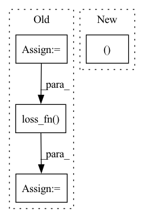

Pattern ID :42209
Before Change
// flatten pred_tags to [sent len, batch size, output dim]
pred_tags = pred_tags.view(-1, pred_tags.shape[-1])
// flatten true_tags to [sent len * batch size]
true_tags = true_tags.view(-1)
batch_loss = self.loss_fn( pred_tags, true_tags)
batch_acc = self.accuracy(pred_tags, true_tags)
batch_loss.backward()
self.optimizer.step()
epoch_loss += batch_loss.item()After Change
// tags = [sent len, batch size]
true_tags = batch.tag.to(self.device)
self.optimizer.zero_grad()
pred_tags_list, batch_loss = self.model(words, chars, true_tags)
pred_tags_epoch += pred_tags_list
// to calculate the loss and f1, we flatten true tags
true_tags_epoch += [In pattern: SUPERPATTERN
Frequency: 3
Non-data size: 4
Instances Fragment ID: 118777452
Project Name: yoseflaw/nerindo
Commit Name: a70e55e7c0489cba1290ebd51512a9e878c6e0ed
Time: 2020-08-09
Author: yosefardhitowin@gmail.com
File Name: nerindo/trainer.py
M Class Name: Trainer
N Class Name: Trainer
M Method Name: epoch(1)
N Method Name: epoch(1)
M Parent Class: object
N Parent Class: object
M File Name: nerindo/trainer.py
N File Name: nerindo/trainer.py
M Start Line: 31
M End Line: 51
N Start Line: 61
N End Line: 83
Before Change
true_tags = batch.tag
pred_tags = self.model(text)
pred_tags = pred_tags.view(-1, pred_tags.shape[-1])
true_tags = true_tags.view(-1)
batch_loss = self.loss_fn( pred_tags, true_tags)
batch_acc = self.accuracy(pred_tags, true_tags)
epoch_loss += batch_loss.item()
epoch_acc += batch_acc.item()
return epoch_loss / len(iterator), epoch_acc / len(iterator)After Change
words = batch.word.to(self.device)
chars = batch.char.to(self.device)
true_tags = batch.tag.to(self.device)
pred_tags, batch_loss = self.model(words, chars, true_tags)
pred_tags_epoch += pred_tags
true_tags_epoch += [
[tag for tag in sent_tag if tag != self.data.tag_pad_idx] Fragment ID: 118777449
Project Name: yoseflaw/nerindo
Commit Name: a70e55e7c0489cba1290ebd51512a9e878c6e0ed
Time: 2020-08-09
Author: yosefardhitowin@gmail.com
File Name: nerindo/trainer.py
M Class Name: Trainer
N Class Name: Trainer
M Method Name: evaluate(3)
N Method Name: evaluate(2)
M Parent Class: object
N Parent Class: object
M File Name: nerindo/trainer.py
N File Name: nerindo/trainer.py
M Start Line: 55
M End Line: 69
N Start Line: 85
N End Line: 104
Before Change
// predict and take gradient step
model_out = self.model(x, t, x_self_cond)
target = x_start
loss = self.loss_fn( model_out, target)
return loss
def forward(self, img, *args, **kwargs):
b, c, h, w, device, img_size, = *img.shape, img.device, self.image_sizeAfter Change
// noise sample
x, log_snr = self.q_sample(x_start = x_start, t = t, noise = noise)
// if doing self-conditioning, 50% of the time, predict x_start from current set of times
// and condition with unet with that Fragment ID: 118777451
Project Name: lucidrains/bit-diffusion
Commit Name: 7b25c9d18c4aa4200c7df429ffa7815641f67021
Time: 2022-08-17
Author: lucidrains@gmail.com
File Name: bit_diffusion/bit_diffusion.py
M Class Name: BitDiffusion
N Class Name: BitDiffusion
M Method Name: p_losses(4)
N Method Name: p_losses(4)
M Parent Class: nn.Module
N Parent Class: nn.Module
M File Name: bit_diffusion/bit_diffusion.py
N File Name: bit_diffusion/bit_diffusion.py
M Start Line: 579
M End Line: 596
N Start Line: 599
N End Line: 613